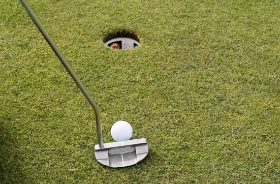

Golfkuvia

Golfvideo
Seuraavalla videolla voidaan esitellään golflyönnin perusteita.
Golfäänite
Tässä kuulet miltä golf swingi kuulostaa.

Seuraavalla videolla voidaan esitellään golflyönnin perusteita.
Tässä kuulet miltä golf swingi kuulostaa.